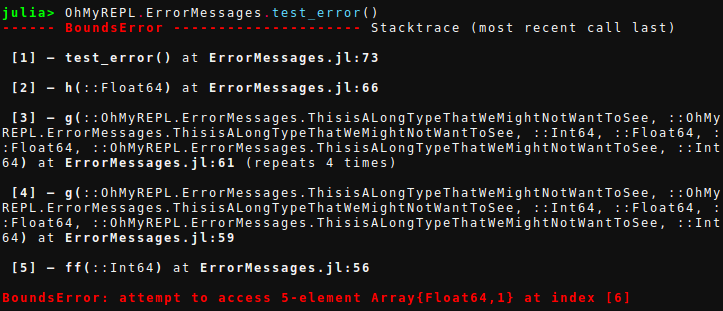

Error Messages
This feature only works on Julia v0.5 and currently v0.6 master. Due to rapid changes of the master branch, stability on v0.6 can not be guaranteed.
OhMyREPL provides what can be argued to be a bit nicer error messages than Julia's default ones.
The difference between the standard error messages and the ones from OhMyREPL is shown below:
Default error message

OhMyREPL error message

The differences between the two are:
Stack trace in
OhMyREPLis printed in reverse. This makes the top stack frame which is the one that is likely most interesting be closest to the cursor and will prevent the need to scroll to it for long traces.The actual error message is in the bottom.
Instead of everything being in bold red the color and boldness is varied to try to highlight the information that is likely to be more important.
Each stack frame has a number. By entering the number in the REPL and then pressing <CTRL + Q> the editor will open at the file and line number of that stack frame. For this to work, set the
"EDITOR"environment variable, for exampleENV["EDITOR"] = sublfor Sublime Text on linux.
Settings
There are a few environment variables that can be set to change the way the error messages are printed.
"JULIA_ERR_LINFO_COLOR"can be set to one of the symbols inBase.text_colorsand determines how the file name and line number is printed."JULIA_ERR_FUNCDEF_COLOR"can be set to one of the symbols inBase.text_colorsand determines how function name is printed."JULIA_ERR_LINFO_NEWLINEcan be set totrueorfalseand determines if the line info should be printed on a new line.